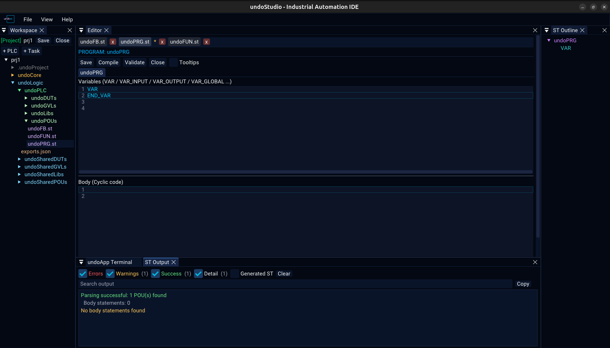
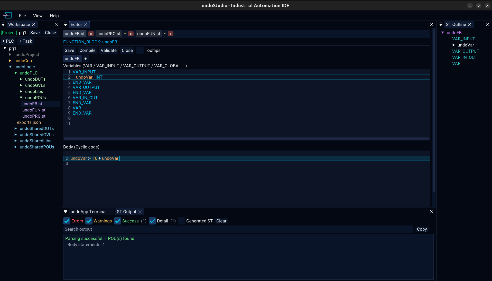
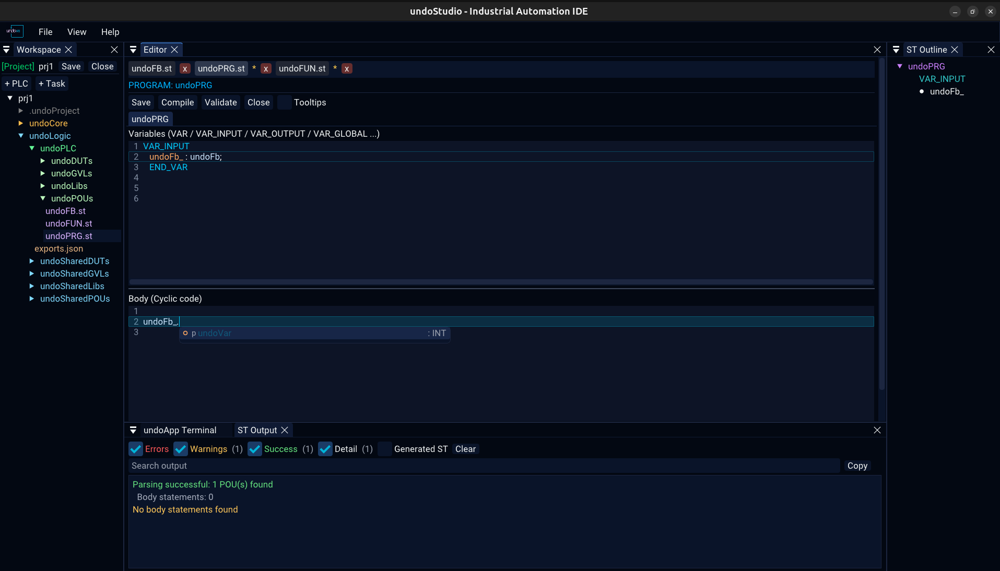
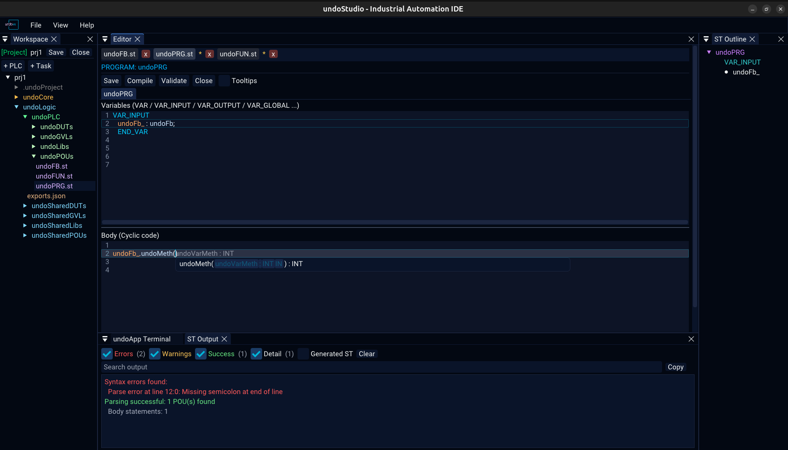
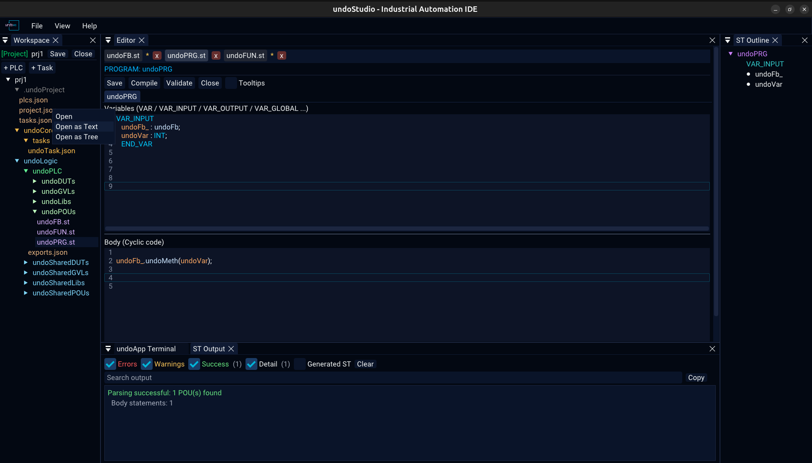
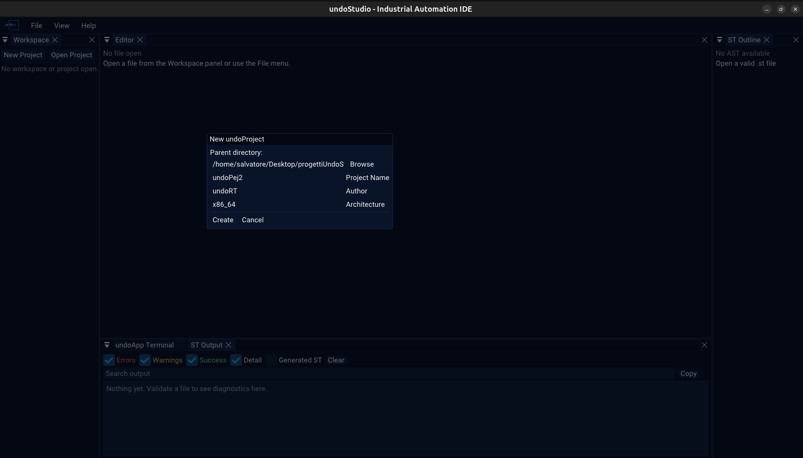
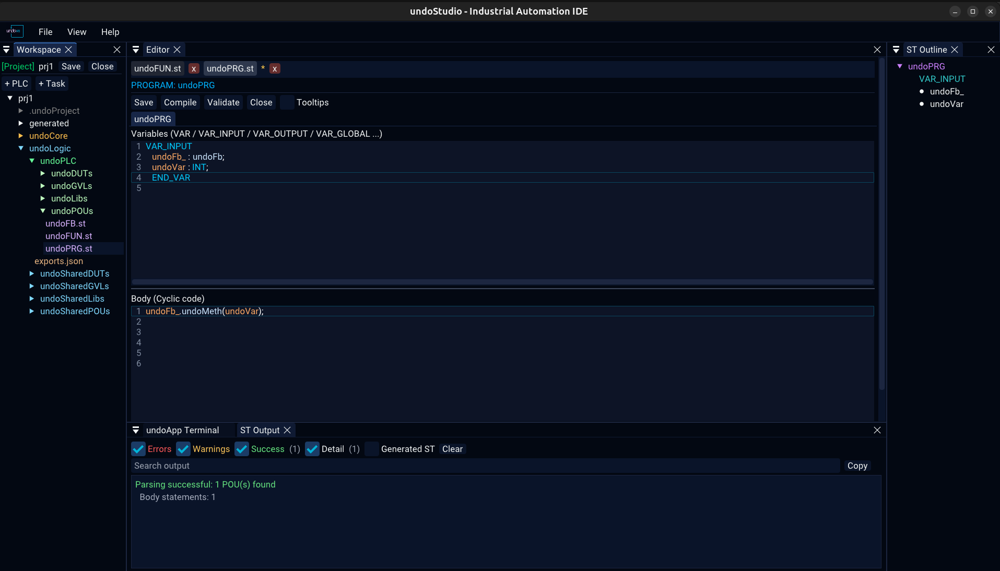

undoStudio Released · v0.1
The IDE of the undoRT ecosystem. It edits what st2cpp compiles and what undoPLC runs: IEC 61131-3 Structured Text with the colouring and the completion lists driven by what the file actually declares, a project described in JSON, and Compile one button away from the transpiler.
Overview
undoStudio owns the application lifecycle, the window, the ImGui framework and the
project on disk. It implements no domain functionality: everything else
is an undoApp, an independent module built as a shared object and loaded from
plugins/. The split is the architecture, not a convenience — an undoApp that
has to be linked into the executable cannot be shipped on its own.

- One editor panel for every kind of file:
.st,.json,.cpp, plain text - Structured Text parsed as it is edited: semantic colouring from the symbol table, not from a keyword list
- Member, statement and signature completion, all driven by the parsed file
Ctrl+Clickfrom an identifier to its declaration, across files- One POU in two panes —
VariablesaboveBody, with the splitter remembered per workspace - Method tabs on a
FUNCTION_BLOCK, added and removed from the tab itself - A project is JSON:
project.json,plcs.json,tasks.json, one file per task - A role-aware tree: the context menu knows whether it is on a POU folder, a PLC or a task
- Diagnostics reported against the generated file, through the source map back to the editor that owns the line
- An embedded terminal — one shell per tab, on a real pty
- Recent projects and recent files, remembered between runs, in
Ctrl+RandCtrl+P - Every feature is a plugin: a third party can add a panel without touching the core
FUNCTION can be parsed, and the version is announced from one
place. Three test suites — 40 tests — run on every build, all of them
headless: no GPU and no display.
Installation
Download the archive
Grab the latest release from GitHub Releases:
tar -xzf undoStudio-<version>-linux-x86_64.tar.gz
cd undoStudio-<version>
./undoStudioresources/… and the undoApps are loaded from
plugins/, both relative to the working directory — from anywhere else
the IDE comes up without them.
What is in the archive:
| Path | What |
|---|---|
undoStudio | the IDE |
libundoStudioCore.so | the core library it links |
plugins/ | the undoApps, loaded at start-up |
resources/ | fonts, icons, themes, default layout |
st2cpp/ | the transpiler the Compile button invokes |
docs/ | the feature documentation, a screenshot on every page |
The X11 and OpenGL development libraries GLFW builds against, and glm, still have to be on the machine; they are in the README under “System packages”.
Build from source
Every dependency is a git submodule, and two of them are undoRT forks — the ImGuiColorTextEdit branch that carries the semantic tokens, and st2cpp itself:
git clone --recursive https://github.com/undoRT/undoStudio.git
cd undoStudio
cmake -B build -DCMAKE_BUILD_TYPE=Release
cmake --build build -j"$(nproc)"
# the transpiler the Compile button shells out to
cmake -S third_party/st2cpp -B build/st2cpp -DCMAKE_BUILD_TYPE=Release
cmake --build build/st2cpp -j"$(nproc)"
The binary, the core library and the undoApps are written next to resources/,
because that is the directory the IDE resolves them against. The intermediates go to
build/ — -B decides where those go, not where the build puts
anything it has to find again.
The Window
Four panels, all listed under View, all shown or hidden from there:
| Panel | What is in it |
|---|---|
| Workspace | the file tree and the project toolbar |
| Editor | every open file, above one tab bar |
| ST Output | build and validation messages, filterable |
| ST Outline | the POU, its sections, methods, structs and enums, from the parsed file |
View > Reset Layout puts them back where the shipped layout has them, and the terminal — an undoApp panel like any other — appears when its plugin is there.
The Editor Panel
undoStudio has one editor panel. A Structured Text file, a JSON file, a C++ file and a plain text file all open in it, each in its own tab, above the same tab bar. A document on screen is a document on screen whichever extension it has.

The tab bar
| What it does | |
|---|---|
| A click keeps the tab | there is one preview slot, and browsing the tree through it replaces what was there. A file somebody asked to see is still there when they ask for another one. |
| A second click is not needed | ImGui only reports a double click when both clicks land within a few pixels of each other — a rule nobody can see. |
| An asterisk means unsaved changes | it is the file's own text that is asked, not a flag set when the tab was left. Browsing past a file with edits pins it rather than throwing the typing away. |
Ctrl+S saves | the button is there too, in the ST toolbar |
| Closing a tab unloads the file | closing the project clears them all |
| Renaming follows the file | a rename or a move in the tree rewrites the tab, the path a save goes to and the key its text is held under — all three, or Ctrl+S writes a copy where the original used to be |
A file that is not on screen is not kept in memory as text on disk: its unsaved contents are stashed, and the stash is handed back when the tab is selected again — at the cursor and the pane division it was left at.
Which backend a file gets
| Extension | Backend | Notes |
|---|---|---|
.st | Structured Text | below |
.json | JSON tree, or text | the file's role, not its extension |
.c .cpp .cc .cxx .h .hpp .hh .hxx | C++ | syntax colouring from ImGuiColorTextEdit's own definition |
| anything else | Text | no colouring |
Structured Text
The ST backend edits IEC 61131-3 Structured Text — POUs, variable sections, methods, structs and enums — with the file parsed, so the colouring, the outline and the completion lists all come from what the file declares rather than from a list of keywords.

The two panes
The upper pane holds the variable sections — VAR, VAR_INPUT,
VAR_OUTPUT, VAR_IN_OUT, VAR_EXTERNAL,
VAR_GLOBAL, VAR_TEMP — and the lower one the cyclic code. Where
the splitter sits is remembered per workspace.
Methods
A FUNCTION_BLOCK has method tabs beside the POU tab; PROGRAM and
FUNCTION do not, because they have no methods in ST. Tabs can be dragged to
reorder them.
- + adds a method, asking for its name and its return type
- right-click a method tab for Delete Method, with a confirmation
- Add Method in a file's context menu does the same thing
- saving and compiling serialize every tab of the POU, not only the one on screen
Semantic colouring
Identifiers are coloured by what they resolve to — a declared variable, a function, a type, a keyword — using the symbol table st2cpp builds. A name that resolves to nothing is left uncoloured, which is how a typo shows up before it is compiled.
The toolbar
| Button | What it does |
|---|---|
| Save | writes the whole POU, every method tab included |
| Compile | hands the project to st2cpp — below |
| Validate | parses and analyses without generating |
| Close | closes the document |
| Tooltips | off by default |
Autocomplete & Signature Help
Three lists, plus signature help and declaration jumps, all driven by the parsed file — so what they offer is what the file actually declares.

.: the fields and methods of the thing before the dot.
| List | Offered when | Offers |
|---|---|---|
| Member | after a . | the fields and methods of the thing before the dot |
| Statement | on a keyword fragment | the ST statements and declarations that begin with what is typed — and the list knows which pane it is in |
| Signature help | inside the parentheses of a call | that function's parameters, one per line |
Without a . the identifier being typed is the prefix, so a half-typed variable
or method name is completable too; neither list opens inside a comment or a string literal,
where a name cannot be completed anyway. Only one list is ever on screen: a statement list
answers about the same word a member list would, and the more specific one wins.
Tab opens the parameter picker for the call being written, and the name and
type of the parameter being filled in are shown in grey at the caret. ↑
↓ move, PageUp PageDown move a page, Enter
accepts, Esc dismisses.
Ctrl+Click on an identifier jumps to where it is declared, across files. The status line says so while the mouse is over it, and a click on something that is not declared is reported in the ST Output panel rather than doing nothing.
JSON: Text or Tree
A .json file gets one of two backends: text, which you can edit,
or the tree viewer, which you can only look at. Which one it gets is the
file's role, not its extension — answered from the project that is open.

project.json as text: it is the file the user is told to edit by hand.
A project's own configuration would go to the viewer by extension, and the viewer draws a
tree and has nothing to type into. Those are the files the user is told to edit by hand —
exports.json holds the PROGRAM order, a task file its cycle time — so they open
as text. Every other .json gets the tree, and outside a project there are no
configuration files, so a .json there is a tree.
Right-click any .json in the Workspace tree for Open as Text and
Open as Tree. Both replace the tab rather than adding a second one:
one file is one row in the bar, and the row is whichever view it is in.
Keyboard
| Keys | Where | What |
|---|---|---|
Ctrl+R | global | File > Open Recent Projects |
Ctrl+P | global | File > Open Recent Files — what reaches for a file in VS Code, so the file list could not have had Ctrl+R |
Ctrl+S | Editor, ST document | save — the ST document writes the whole POU |
Ctrl+N | ST document | new POU |
Ctrl+W | Editor, ST document | close the document |
Ctrl+Click | ST document | go to the declaration of the identifier under the cursor |
↑ ↓ Enter | recent popups | walk the list and open the one chosen, without a mouse |
x | recent popups | forget that one entry |
Ctrl+R and Ctrl+P are held off while anything owns the keyboard — a
code editor, the terminal — because in there the same two keys mean something else entirely,
and stealing them would break the program the user is in.
The Workspace Tree

.st in violet, configuration in amber.
The two toolbars
| Without a project | With a project | |
|---|---|---|
| Above the tree | New Project, Open Project, Select Workspace, Refresh | the project name in green, Save, Close, Select Workspace, Refresh |
| Below the tree | + POU, + Folder, + File | + PLC, + Task |
What the context menu offers
| Folder | Items |
|---|---|
| POUs | New PROGRAM, New FUNCTION_BLOCK, New FUNCTION |
| GVLs | New GVL |
| DUTs | New STRUCT, New ENUM |
| Libs | Add Library File |
| undoLogic | Add PLC… |
| a PLC | Add Task…, Rename PLC…, Delete PLC |
| Tasks | Add Task… |
| anything else | New POU, New File, New Folder, Rename, Delete Folder |
Delete is not on the keyboard: removing a file is not something a stray keypress should do. Dragging a file onto a folder moves it there, and the rename follows the tab, the save path and the recent files entry with it.
Projects on Disk

A project is a directory with a .undoProject/ descriptor in it:
myProject/
|-- .undoProject/
| |-- project.json name, version, author, target, semantics
| |-- plcs.json the PLCs
| `-- tasks.json the task list
|-- undoCore/
| |-- tasks/ one JSON file per task
| `-- ... the core sources
|-- undoLogic/
| `-- <plc>/
| `-- exports.json the PROGRAM order of that PLC
`-- ...| File | What it holds |
|---|---|
.undoProject/project.json | the project's name, version, author and creation date; the target architecture, OS and kernel; and the semantics settings |
.undoProject/plcs.json | the PLCs in the project |
.undoProject/tasks.json | the task list |
undoCore/tasks/<name>.json | one task: its PLC, cycle, priority and CPU |
undoLogic/<plc>/exports.json | the PROGRAM order of one PLC |
strictness under
semantics is a boolean rather than a string, and a project written before that
key existed reads as strict — which is what a new project is written with.
The tree is built from the roles in plcs.json and the shape of the directory
rather than from names alone: undoLogic/<plc>/exports.json is the PLC's
exports file because the PLC is in the list, not because of what it is called. A
project with no plcs.json has no PLC, and its exports file is an ordinary
.json.
A folder can also be opened as a workspace with no project in it — Select
Workspace. The tree is flat rather than role-aware, the folder menu offers the
generic items, and every .json in it is a tree.
Recent Projects & Files

| What it does | |
|---|---|
Ctrl+R | the recent projects — File > Open Recent Projects |
Ctrl+P | the recent files — File > Open Recent Files |
| Nothing is reopened on its own | a project is not opened at startup because it happens to be on disk, and a file is not reopened because it was open last time |
x | forget that one entry |
| Remember | how many to keep — the limit is editable in the popup it governs |
(missing) | an entry whose file or folder is gone is kept and marked, rather than dropped: an entry vanishing is never a mistake |
A file is remembered however it was reached — clicked in the tree, opened from the menu, dropped onto the window — and opening it puts it back where it was, at the cursor and the pane it was left in. The list is ordered by when a file was last looked at, and an entry follows a rename or a move.
Both lists read and write the same max key in the same [recent]
section: there is nothing useful to configure separately about how much of two lists of the
same kind to remember. Changing it through either list trims the other on the next load.
State Between Runs
Four files are written next to the layout. They are yours, they are not tracked, and deleting any of them puts that part of the setup back to its default.
| File | What it holds |
|---|---|
undoStudio_layout.ini | the dock layout. A first run adopts the one under resources/, which is tracked, because it is the layout a fresh install opens with |
undoStudio.ini | the window size, the recent projects, the recent files, and the one limit they share |
undoApp.Editor.ini | where the Variables and Body sections are divided |
undoApp.Terminal.ini | the size the terminal is drawn at |
They sit in the working directory, which is why an installed copy has to be
started from the directory holding resources/ and plugins/. They
are the IDE's state and not the project's: nothing in a project reads them, so deleting them
costs nothing but a layout.
Compiling & ST Output

Compile on the ST toolbar hands the project to st2cpp, which
is a separate command-line binary built from third_party/st2cpp. The Editor looks
for it on PATH first and then at build/st2cpp/st2cpp, and
prints the path it used at the top of the panel. A missing transpiler is
reported plainly and nothing else stops working.
Validate parses and analyses without generating.
| What it does | |
|---|---|
| Errors, Warnings, Success, Detail | show or hide each severity, with a count beside it |
| Generated ST | the generated file in full, off by default |
| Search output | filter the lines — and it belongs to the panel and to the workspace it was typed in, so a query left over from one project does not filter the next project's log to nothing |
| Copy | the lines currently shown, not the whole log |
| Clear | empty the panel |
.st file is
regenerated from the panes being edited, and a source map maps each generated
line back to the editor that owns it. A diagnostic is therefore reported against the
generated file, and its line numbers mean nothing without that map — so one that falls
outside every editor's own lines says so and names the generated line.
undoApps
A plugin is a shared object exporting two C symbols.
createUndoApp is expected to have fully initialised the app — registering its
panels and all — before it returns, and destroyUndoApp to have removed them
again:
extern "C" {
void* createUndoApp()
{
auto& app = MyApp::getInstance();
app.initialize(); // registers the panels
return &app;
}
void destroyUndoApp(void* app)
{
static_cast<MyApp*>(app)->shutdown(); // removes them
}
} // extern "C"| undoApp | What it is |
|---|---|
| undoApp.Editor | Structured Text, JSON, text and C++ editing, the Workspace tree and the projects |
| undoApp.Terminal | the embedded shell |
| undoApp.Demo | the smallest possible undoApp, there to show the shape of one. BUILD_DEMO_APP is off by default |
Registering a panel by a name another undoApp already registered replaces that one's callback rather than adding a second panel, so the load order decides which body is drawn. The core cannot call into an undoApp: it leaves a request and the undoApp picks it up, which is what the add-METHOD dialog and both recent-files lists live by.
The ones that are meant to
Each is described by what it is for rather than what it does, because none of them exists yet.
| undoApp | For |
|---|---|
| undoApp.PLC | PLC configuration, tasks, variables, deployment, against undoPLC |
| undoApp.BUS | EtherCAT and fieldbus configuration, PDO mapping, network diagnostics |
| undoApp.Diagnostics | PLC status, task execution, cycle time, jitter, CPU, runtime errors |
| undoApp.OPCUA | OPC UA servers and clients, namespaces, node publishing |
| undoApp.Motion | axes, motion profiles, drives, kinematics |
| undoApp.Import | migrating TwinCAT, CODESYS and other IEC 61131 projects |
Terminal

A libvterm terminal drawn with ImGui, each tab running a real shell on a pty.
| What it does | |
|---|---|
| + | a new shell |
| x on a tab | close that shell |
| A− / A+ | smaller / larger text, with the size in pixels beside them — and Ctrl + wheel is the same. The buttons are there because a terminal sized by a shortcut nobody can find is a terminal people stop reading |
Testing
Three suites, all headless: no GPU and no display. They create an ImGui context with a font atlas and drive real frames.
./src/core/tests/run_tests.sh # 12 tests
./undoApps/undoApp.Editor/tests/run_tests.sh # 26 tests
./undoApps/undoApp.Terminal/tests/run_tests.sh # 2 tests
# a subset, by name
./undoApps/undoApp.Editor/tests/run_tests.sh completionEach check that could not fail would not be a check, so every one of them found a real bug: a fuzzy match stealing the member completion, 1841 cells in 1920 painted the wrong colour, a key written above its own section header, and a row in the recent-files popup that rendered in the right order, in the right place, with the right name on it, and could not be picked because its ID belonged to another row.
The Editor and Terminal suites link against the built core and need the project compiled first. They run on every release build, which is why the archive is only ever attached to a release somebody deliberately made.